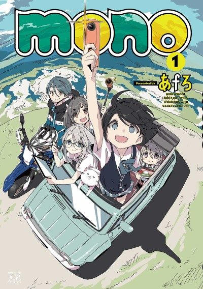

Manga continues fromCh. 33
Anime
Manga continues fromCh. 33
Anime
Mangamono
mono
AniList7.6
Animeter—
Episodes12 ep
MangaCh. 33
Anime finished. Where does the manga pick up?
Start at Chapter33
The final episode adapts Chapters 23-32. Continue reading from Chapter 33.
132ongoing
Season 1Start reading here